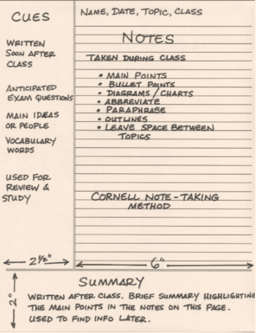
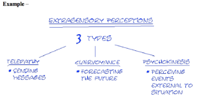
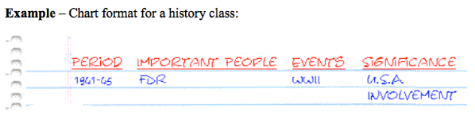

Studying starts the moment we enter school. But even after all those years of taking tests and quizzes, most of us don't discover the studying tips and tricks that can save us from those all nighters and help us remember information more efficiently until it's too late. If you want to learn some of these tips and studying methods, scroll below!
We've all been there ---we can't find our notes or we can't read our scrawly, messy handwriting. But fear no more, your days of note taking nightmares are over. Here are some tips on how to take proper and effective notes.
Teachers speak so fast that it’s almost impossible to make out what they’re saying, making it hard to understand what they’re supposed to be teaching. If your teacher does one of the following, it most likely means he or she is trying to emphasize an important point.
Example: The diameter of planet x is four times greater than the diameter of y.
Planet x = 4x > diameter planet y
The Sentence Method
The Cornell Method
Systematic method for condensing and organizing notes. This system divided the page up into two sections; the main space and the small, left space. In the main space, record any notes and on the smaller section, label each idea and detail with a keyword or “cue”.
The Outline Method
Dash or indented outlining is best used for most classes, except for classes such as physics or math.The Mapping Method
Used to connects each fact or idea to one central idea. It is a graphic representation of the lesson. Use when the lecture content is heavy and well organized The Mapping Method
Used in history or foreign language classes. If the format of the lecture is chronological or mostly definition based, set up your paper by drawing columns and labeling appropriate headings in the table. Learning how to read quickly and effectively is a skill most students should develop early on since that is how we get most of our information. Although it can look intimidating at first, implementing these strategies can help save you from reading your textbook/notes a billion times.
Use the following strategies when reading:
Finding a quiet place where you can focus and concentrate on your studies is just as important as taking good notes or reading. Make sure the location where you are studying is:
When choosing a location to study, understand your personal requirements. If you spend majority of your day in school, find a place at your school where you can study quietly without any distractions.
Ask these questions: